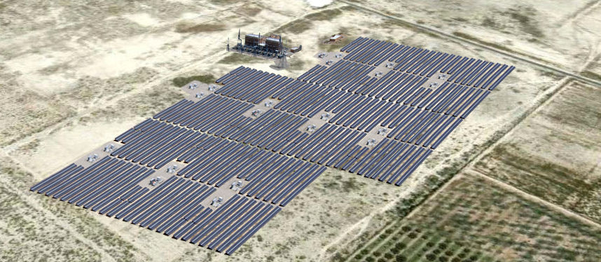

Existe un amplio interés de los laguneros y de su gobierno por reconocer el futuro de nuestra economía en relación a los cambios habidos en la legislación energética.
No podemos omitir el hecho de que la matriz energética global repercutirá significativamente en la estructura y dinámica de la planta productiva local.
Debemos suponer el impacto de la posible producción de Gas Shale en el mediano plazo, en términos de costo ambiental, cadenas de valor, competencias laborales, cadena de suministro, infraestructura y recursos naturales.
Es necesario visualizar un futuro con Gas Shale y sin Gas Shale, lo que implica planear en el corto, mediano y largo plazo, y definir: estrategias claras, acciones a emprender, regulaciones medio ambientales, urbanas, económicas, sociales, etc.
También es importante reconocer el gran potencial en materia de energías limpias o energías renovables, dado que contamos con importantes ventajas competitivas y comparativas en la rama de energía solar, energía de la biomasa y energía eólica. Sin omitir el interés de la grande, mediana y pequeña empresa lagunera por participar en las cadenas de valor y cadenas de suministro relacionadas con la energía limpia.
Señalemos la enorme responsabilidad que tiene esta generación en cuanto a las decisiones que tomemos en materia de producción, distribución, comercialización, tanto de energía no renovable como de la renovable.
El futuro del medio ambiente y las perspectivas de desarrollo y bienestar de nuestra comunidad dependerán de las decisiones que en este momento tomemos, las universidades, el sector privado y el público.
Ahora más que nunca la universidad debe convertirse en puntal y vector principalísimo del futuro energético de La Laguna.
Debemos duplicar o triplicar el esfuerzo universidad-sociedad-gobierno a favor de la productividad energética y de las competencias laborales de los egresados.
Por todo esto, desde el IMPLAN felicitamos a Grupo Milenio por la iniciativa de llevar a cabo el segundo Symposium “Realidad Energética 2016”, mismo que permitirá relacionarnos con destacadas y destacados profesionistas expertos en esta materia, poniendo en la mesa de debate temas de enorme relevancia para el futuro productivo de México, Coahuila y La Laguna.
Algunas Realidades en materia de energía renovable
La Laguna y Coahuila se suman a la meta de México: para 2024 de acuerdo con la Secretaría de Energía, 35% de la electricidad producida en nuestro país deberá de provenir de fuentes limpias.
Actualmente en Coahuila se desarrolla uno de los proyectos más ambiciosos para la generación de energía renovable en México.
Se trata de la construcción de un parque solar en el municipio lagunero de Matamoros, situado en un terreno de 50 Hectáreas, donde se instalarán 87.000 módulos de silicio policristalino, en estructuras fijas.
Contará con una subestación situada en el terreno que elevará la tensión a 115 Kv para la conexión a CFE, a través de una línea de alta tensión de 2.2 Km.
La energía generada se suministrará, bajo la modalidad de Autoabastecimiento, al Gobierno de Coahuila y a los principales municipios del área de La Laguna, para su utilización en escuelas, dependencias estatales y en alumbrado público municipal. El costo de la energía será inferior al precio establecido por CFE.
Por otro lado Peñoles anunció un proyecto de energía eólica para 2016, en conjunto con una empresa de Portugal, que generará alrededor de 200 mega watts de electricidad.
En La Laguna ha crecido el número de empresas dedicadas al ramo de energías renovables y sigue presente el interés de firmas extranjeras en venir a invertir en Coahuila y en la Comarca.
Es el caso de una industria de Holanda, dedicada al tratamiento de agua y al aprovechamiento de residuos, que ya abrió filial en Colombia y que desea venir a invertir a la Laguna; de acuerdo con empresarios cercanos a la salud y medio ambiente.
En México se tienen datos de que únicamente 0.5% de las viviendas particulares habitadas cuenta con paneles solares. Si aplicamos la tasa en Torreón, de acuerdo con la Encuesta Inter censal del INEGI en 2015, existen 191,890 viviendas habitadas, lo que significa que sólo alrededor de 959 hogares estarían utilizando esta tecnología. Esto pone en evidencia una gran área de oportunidad para el mercado lagunero.
Parque solar en Coahuila

| Datos Principales | Valor |
|---|---|
| Potencial nominal instalada en el parque solar | 19,95 Mw |
| Potencial pico (suma de potencia de paneles) instalada | 21,46 Mw |
| Energía anual generada en el primer año (kw por año) | 35,634,000 kwh/año |
| Energía generada en la vida del Parque Solar (kwh en 25 años) | 805,328,400 kwh |
| Beneficios Medioambientales | Datos |
|---|---|
| Reducción anual en emisiones de CO2 (Tn por año) | 25.140 Ton (CO2) / año |
| Reducción en 25 años en emisiones de CO2 (Tn) | 568.159 Ton (CO2) |
| El CO2 evitado anualmente equivale a las emisiones de | 5,237 automóviles |
| El CO2 que se evitará emitir en los 25 años de vida del Parque Solar equivale a lo que mite un automóvil que hubiera recorrido | 97 millones de Km |
| En los 25 años de vida del Parque Solar se habrá evitado generar CO2 equivalente a lo que hubieran absorbido | 14,568,184 árboles urbanos |